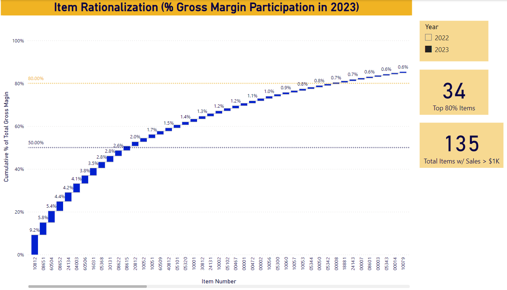
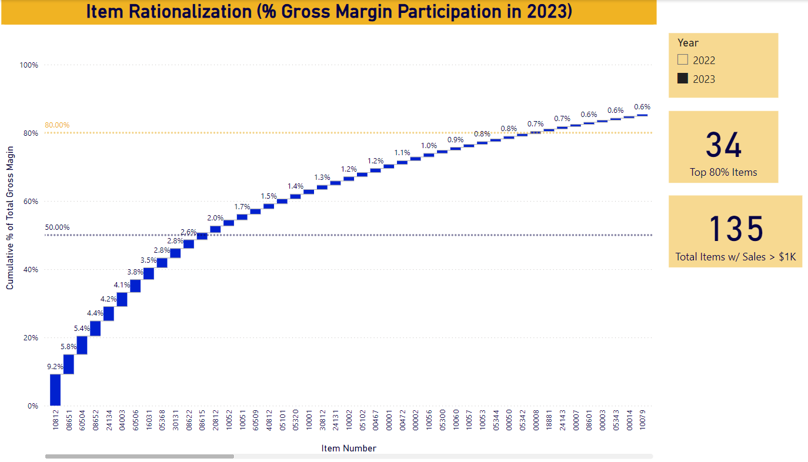
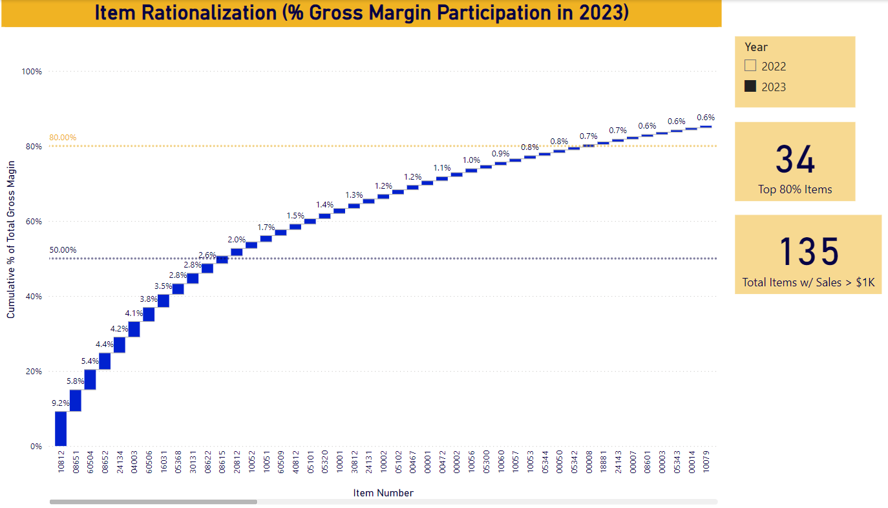

Click on any image to zoom:

 


Hello! I'm Alejandro Vallin Romo.
What can I do for you?
I'm a Business Intelligence Consultant and Data Analyst, certified in Data Science for Business.
A Graduate in Engineering Physics from the University of Colorado, Boulder and a former University Professor; I have experience transforming complex datasets into actionable insights. My expertise lies in statistical analysis, data visualization, and data management.
Developed interactive Sales Analysis Dashboards designed to provide actionable insights into sales performance. The following examples are built using Power BI and feature interactive visualizations and filters that allow users to explore the data generated by their customer and products across different time frames, sales regions, among other metrics. Analyzing how the top customers are buying in comparison to previous trends, as well as the current business plan, enables the company to monitor progress, identify risks and opportunities, and make data-driven decisions.
Click on any image to zoom:

Developed a program in Python to almost instantly generate a comprehensive Date Dimension Table in a CSV format, which includes various attributes for dates ranging from January 1, 2023, to December 31, 2023. The date range can be easily changed to the needs of the user by modifying the variables start_date and end_date. The table is designed to be used in data warehousing and business intelligence applications for companies that do business both in Mexico and in the United States.
Click on any image to zoom:
Created an interactive dashboard to visualize churn rate, with the purpose of identifying oportunities to increase customer retention.
I'm always open to new opportunities and collaborations!
Click here to send me an e-mail.Or reach out another way: